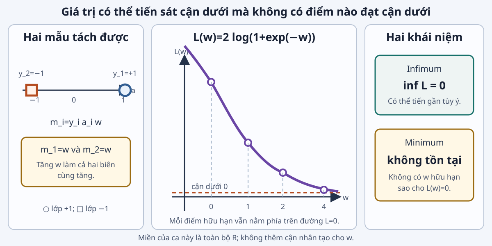
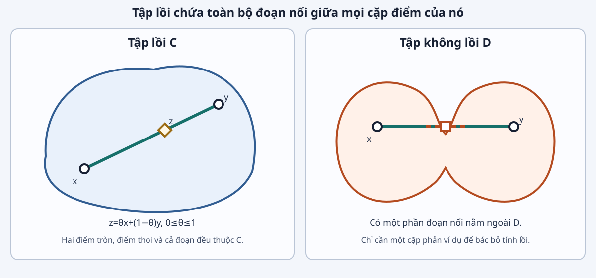
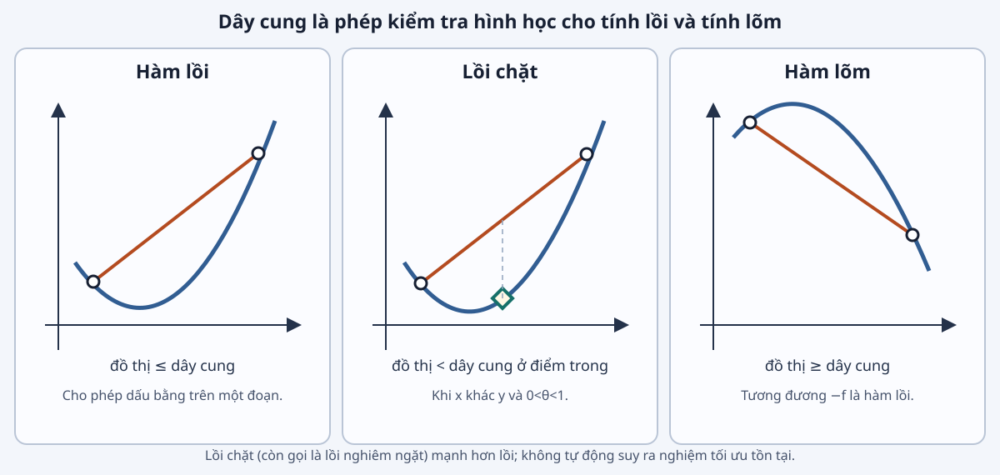
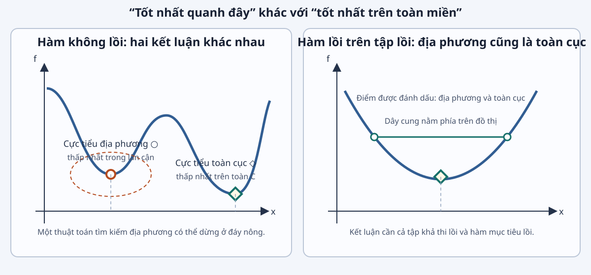
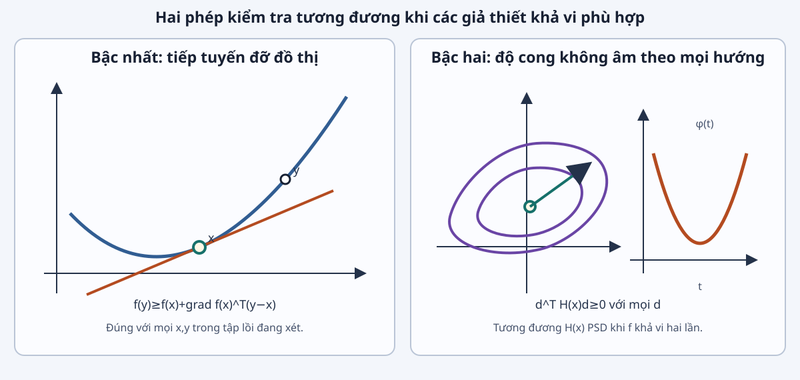
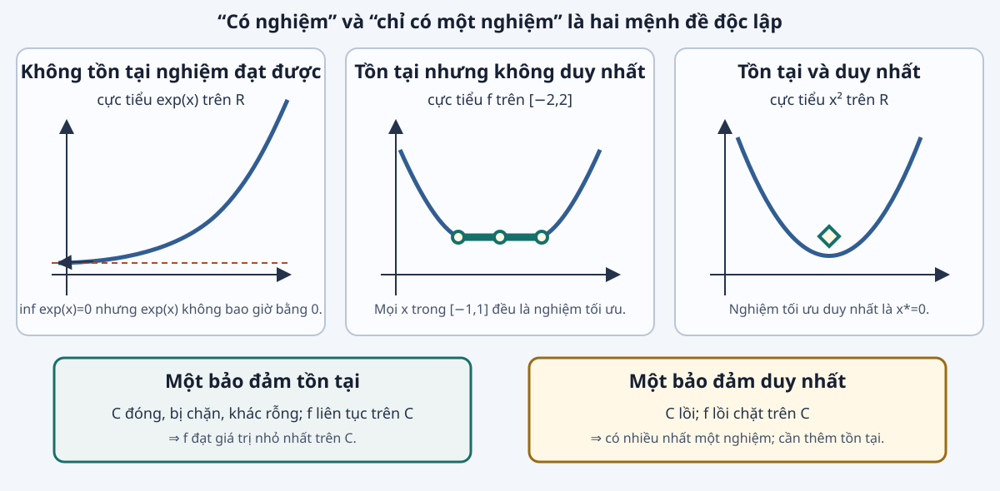

Phân loại bằng biên có dấu
Với $a_i\in\mathbb R^d$ và $y_i\in\{-1,+1\}$, mô hình cho điểm số $a_i^Tw$.
$$m_i=y_i a_i^Tw$$
$m_i>0$ Dấu dự đoán khớp nhãn.
$m_i=0$ Mẫu nằm trên biên quyết định.
$m_i<0$ Dấu dự đoán sai nhãn.
Biên có dấu gom đặc trưng, nhãn và tham số vào một đại lượng cần tăng.
Không nhầm $a_i$ với hàng $x_i$ của hồi quy tuyến tính: ký hiệu khác để nhấn mạnh đây là ca phân loại, dù đều là vector đặc trưng. Tích $y_i a_i^Tw$ lớn và dương biểu thị phân loại đúng với độ tin cậy cao hơn. Chuyển sang hàm phạt cho biên có dấu.
Mất mát logistic
Mất mát một mẫu
$$\ell(m)=\log(1+e^{-m})$$
$m$ tăng thì $\ell(m)$ giảm.
Mục tiêu học tham số
$$L(w)=\sum_{i=1}^{n}\ell(y_i a_i^Tw)$$
Biến quyết định: $w\in\mathbb R^d$.
Mô hình cơ sở không có ràng buộc bổ sung: $\min_{w\in\mathbb R^d}L(w)$.
Hàm mất mát luôn dương với biên hữu hạn và tiến về không khi biên tiến ra dương vô cùng. Việc mỗi hạng giảm không có nghĩa tổng luôn đạt giá trị nhỏ nhất tại một vector hữu hạn. Trang sau cung cấp phản ví dụ tính được.
Dữ liệu tách tuyến tính

Hai mẫu: $(a_1,y_1)=(1,+1)$, $(a_2,y_2)=(-1,-1)$.
$$L(w)=2\log(1+e^{-w}).$$
$w$ $L(w)$ 0 1,386 1 0,627 2 0,254 4 0,036
$\inf_{w\in\mathbb R}L(w)=0$, nhưng $L(w)>0$ với mọi $w$ hữu hạn.
Cả hai biên có dấu đều bằng $w$, nên tăng $w$ làm cả hai mất mát giảm. Giá trị 0 là cận dưới đúng nhưng không phải giá trị nhỏ nhất, vì hàm logarit luôn dương tại mọi $w$ hữu hạn. Đây là ca chính dùng miền $\mathbb R$, khác bản SVG cũ từng đặt thêm đoạn $[-1,1]$. Chuyển sang phân biệt dãy điểm tốt dần với nghiệm.
Giá trị tốt dần và sự tồn tại nghiệm
Câu hỏi: Dãy $w_k=k$ làm $L(w_k)\to0$. Dữ kiện này có đủ để gọi một $w_k$ là nghiệm tối ưu không?
Dãy tối ưu hóa Các giá trị tiến gần cận dưới tùy ý.
Nghiệm tối ưu Phải là một điểm hữu hạn đạt đúng cận dưới.
Một mục tiêu có thể có cận dưới hữu hạn nhưng không có nghiệm.
Đáp án: không. Với mọi $k$ hữu hạn, chọn $k+1$ cho giá trị nhỏ hơn, nên không phần tử nào của dãy là nghiệm. Ba ca đến đây đã tạo ba câu hỏi: xử lý nghiệm biên, điều kiện duy nhất và điều kiện tồn tại. Chuyển sang khuôn chung để gọi tên các thành phần.
Đoạn nối giữa hai phương án

Chọn hai phương án $x,y\in C$.
$$z_\theta=\theta x+(1-\theta)y,\qquad 0\le\theta\le1.$$
$z_\theta$ là điểm nằm trên đoạn nối $x$ và $y$.
Miền lồi giữ mọi phương án nội suy trên đoạn ở trong miền.
Trực giác ở đây là tính khép kín theo đoạn thẳng, không phải tập phải tròn hoặc bị chặn. Hình bên phải cung cấp phản ví dụ khi một phần đoạn nối đi ra ngoài tập. Nguồn nội dung: MIT 6.079, lec02, trang 2-3; hình được vẽ lại cục bộ.
Định nghĩa tập lồi
Định nghĩa. Tập $C\subseteq\mathbb R^d$ là lồi nếu
$$\theta x+(1-\theta)y\in C$$
với mọi $x,y\in C$ và mọi $\theta\in[0,1]$.
Hai điểm bất kỳ Phải kiểm tra mọi cặp điểm trong tập.
Mọi hệ số Phải kiểm tra toàn bộ $\theta\in[0,1]$.
Nhấn mạnh thứ tự lượng từ: với mọi cặp điểm trong tập, rồi với mọi hệ số trong đoạn đơn vị. Kiểm tra trung điểm chưa đủ nếu không có thêm giả thiết như tính đóng phù hợp. Nguồn: MIT 6.079, lec02, trang 2-3. Chuyển sang các tập xuất hiện trực tiếp trong ba ví dụ.
Các tập lồi dùng trong ba ví dụ
Toàn không gian $\mathbb R^d$
Mọi tổ hợp lồi vẫn thuộc $\mathbb R^d$.
Đoạn và hộp $[a,b]$; $l\le x\le u$
Từng tọa độ nằm giữa hai cận.
Tập affine $\{x\mid Ax=b\}$
Đẳng thức được bảo toàn với tổ hợp lồi $z_\theta$.
Nửa không gian $\{x\mid a^Tx\le b\}$
Bất đẳng thức tuyến tính được bảo toàn với $z_\theta$.
Không mở rộng sang nón, bao lồi hoặc nón nửa xác định dương trong Bài 01. Với hộp, bất đẳng thức được hiểu theo từng tọa độ. Nguồn: MIT 6.079, lec02, các trang 2-4 đến 2-6. Chuyển sang hai quy tắc xây miền lồi phức hơn.
Xây miền lồi từ các tập đơn giản
Giao
Nếu mọi $C_j$ lồi thì $\bigcap_j C_j$ lồi.
Dùng để ghép nhiều ràng buộc.
Nghịch ảnh affine
Nếu $D$ lồi thì $\{x\mid Ax+b\in D\}$ lồi.
Dùng khi ràng buộc áp lên đại lượng dẫn xuất.
$$[-u_{\max},u_{\max}]=\{u\mid u\le u_{\max}\}\cap\{u\mid -u\le u_{\max}\}.$$
Ý tưởng chứng minh cho giao: đoạn nối thuộc từng tập thành phần nên thuộc giao. Với nghịch ảnh affine, ánh xạ của tổ hợp lồi bằng tổ hợp lồi của hai ảnh. Nguồn: MIT 6.079, lec02, trang 2-11 đến 2-13. Chuyển sang kiểm tra miền của ba ca.
Kiểm tra miền của ba ca
Câu hỏi: Điền căn cứ chứng nhận tính lồi cho từng miền khả thi.
Ca Miền Căn cứ
Điều khiển $[-u_{\max},u_{\max}]$ Giao của hai nửa không gian trên $\mathbb R$ Hồi quy tuyến tính $\mathbb R^d$ Toàn không gian Hồi quy logistic $\mathbb R^d$ Toàn không gian
Cho sinh viên tự điền cột căn cứ trước khi hiện đáp án. Với $u_{\max}\ge0$, đoạn điều khiển không rỗng; điều kiện không rỗng sẽ cần khi nói về nghiệm. Chuyển từ hình học của miền sang độ cong của hàm mục tiêu.
Dây cung và đồ thị hàm

Với $x,y\in C$ và $0\le\theta\le1$:
$$z=\theta x+(1-\theta)y.$$
So sánh $f(z)$ với trung bình có trọng số của $f(x)$ và $f(y)$.
Độ cong phù hợp giữ đồ thị không vượt lên trên dây cung.
Hình chỉ tạo trực giác; phát biểu chính xác cần cả miền $C$ lồi và bất đẳng thức cho mọi cặp điểm. Không dùng màu làm dấu hiệu duy nhất: vị trí của dây cung và đồ thị mang thông tin. Nguồn: MIT 6.079, lec03, trang 3-2 đến 3-4; hình được vẽ lại cục bộ.
Định nghĩa hàm lồi
Định nghĩa. Cho $C\subseteq\mathbb R^d$ lồi. Hàm $f:C\to\mathbb R$ là lồi nếu
$$f(\theta x+(1-\theta)y)\le\theta f(x)+(1-\theta)f(y)$$
với mọi $x,y\in C$ và $\theta\in[0,1]$.
Lồi chặt (còn gọi là lồi nghiêm ngặt): dấu bất đẳng thức là nghiêm với $x\ne y$ và $\theta\in(0,1)$.
Miền xác định lồi là một phần của định nghĩa. Lồi chặt loại trừ đoạn thẳng trên đồ thị giữa hai điểm phân biệt nhưng chưa bảo đảm hàm đạt giá trị nhỏ nhất. Nguồn: MIT 6.079, lec03, trang 3-2. Chuyển sang hệ quả toàn cục của bất đẳng thức này.
Cực tiểu địa phương là toàn cục

Định lý. Nếu $C$ lồi và $f:C\to\mathbb R$ lồi, mọi cực tiểu địa phương tương đối với $C$ đều là cực tiểu toàn cục. “Địa phương” chỉ so sánh trên $C\cap N$.
Ý tưởng: nếu có $y\in C$ tốt hơn $x^*$, các điểm trên đoạn từ $x^*$ đến $y$ vừa khả thi, vừa tốt hơn và có thể nằm tùy ý gần $x^*$.
Trong chứng minh, đặt $z_\theta=(1-\theta)x^*+\theta y$. Khi $\theta$ nhỏ, $z_\theta$ nằm trong lân cận tương đối của $x^*$; tính lồi cho $f(z_\theta)
Điều kiện bậc nhất
Định lý. Cho $C\subseteq\mathbb R^d$ mở, lồi và $f:C\to\mathbb R$ khả vi. Khi đó $f$ lồi khi và chỉ khi
$$f(y)\ge f(x)+\nabla f(x)^T(y-x),\qquad \forall x,y\in C.$$
Hình học Mọi siêu phẳng tiếp xúc nằm dưới đồ thị.
Tối ưu không ràng buộc Nếu $\nabla f(x^*)=0$ thì $x^*$ là cực tiểu toàn cục.
Điều kiện là cần và đủ dưới các giả thiết đã nêu. Kết luận gradient bằng không chỉ dùng trực tiếp cho điểm trong miền mở; D04 đã cho thấy nghiệm biên cần xét hướng khả thi. Nguồn: MIT 6.079, lec03, trang 3-7. Chuyển sang tiêu chuẩn Hessian khi hàm khả vi hai lần.
Điều kiện bậc hai

Nếu $C$ mở, lồi và $f$ khả vi hai lần thì
$$f\text{ lồi}\quad\Longleftrightarrow\quad \nabla^2f(x)\succeq0,\ \forall x\in C.$$
$A\succeq0$ nghĩa là $v^TAv\ge0$ với mọi $v$.
Với $J(w)=\lVert Xw-y\rVert_2^2$:
$$\nabla^2J(w)=2X^TX\succeq0.$$
Ca điều khiển: kiểm tra $q$ trên $\mathbb R$, rồi hạn chế xuống đoạn đóng.
Ký hiệu $A\succeq0$ nghĩa là $v^TAv\ge0$ với mọi $v$. Với hồi quy tuyến tính, $v^TX^TXv=\lVert Xv\rVert^2$, nên Hessian nửa xác định dương. Với ca điều khiển, kiểm tra $q''$ trên miền mở $\mathbb R$, rồi hạn chế hàm lồi xuống đoạn đóng. Nguồn: MIT 6.079, lec03, trang 3-8 đến 3-9.
Ghép các viên gạch lồi
Tổng không âm
Nếu $f_j$ lồi và $\alpha_j\ge0$ thì $\sum_j\alpha_jf_j$ lồi.
Hợp với ánh xạ affine
Nếu $f$ lồi thì $x\mapsto f(Ax+b)$ lồi.
$$\ell(s)=\log(1+e^{-s}),\qquad \ell''(s)=\frac{e^s}{(1+e^s)^2}>0.$$
Bình phương của biểu thức affine tạo hai mục tiêu đầu; tổng $\ell(y_i a_i^Tw)$ tạo mục tiêu logistic.
Từng hạng bình phương trong điều khiển và hồi quy tuyến tính là hàm bình phương hợp với ánh xạ affine; hệ số $\lambda$ phải không âm. Với logistic, $s=y_i a_i^Tw$ là affine theo $w$, rồi cộng các hạng. Nguồn: MIT 6.079, lec03, trang 3-13 đến 3-14. Chuyển sang các giả thiết riêng cho tồn tại và duy nhất.
Tồn tại và duy nhất

Tồn tại Liên tục trên miền không rỗng, đóng và bị chặn ⇒ đạt giá trị nhỏ nhất.
Miền không bị chặn Liên tục và bức trên miền đóng, không rỗng ⇒ đạt giá trị nhỏ nhất.
Duy nhất $f$ lồi chặt trên miền lồi thì có nhiều nhất một nghiệm.
Câu hỏi: Trong ba mệnh đề trên, mệnh đề nào vẫn đúng cho $e^x$ trên $\mathbb R$?
Đáp án: lồi chặt chỉ bảo đảm có nhiều nhất một nghiệm, không bảo đảm tồn tại. Hàm bức nghĩa là $f(x)\to+\infty$ khi $\lVert x\rVert\to\infty$ dọc theo miền; $e^x$ không bức vì tiến về 0 khi $x\to-\infty$. Hình được vẽ lại cục bộ theo các phản ví dụ chuẩn. Chuyển sang dùng từng giả thiết cho ba ca.
Chứng nhận ca điều khiển
Miền và tồn tại
$C=[-u_{\max},u_{\max}]$ không rỗng, đóng, bị chặn và lồi.
$q$ liên tục, nên đạt giá trị nhỏ nhất.
Độ cong và duy nhất
$$q''(u)=2(1+\lambda)>0.$$
$q$ lồi chặt nên nghiệm là duy nhất.
$$u^*=\operatorname{clip}\!\left(\frac{t-x_0}{1+\lambda},[-u_{\max},u_{\max}]\right).$$
Với bộ số đã cho: $u^*=1$ là nghiệm duy nhất dù $q'(1)\ne0$.
Điều kiện $u_{\max}\ge0$ bảo đảm miền không rỗng; $\lambda\ge0$ cho $q''>0$. Công thức clip thu được từ nghiệm tự do và hình học một chiều của mục tiêu bậc hai. Kết luận toàn cục đến từ tính lồi; tồn tại đến từ miền đóng, bị chặn; duy nhất đến từ lồi chặt. Chuyển sang ca có miền không bị chặn.
Chứng nhận hồi quy tuyến tính
Luôn có nghiệm
Không gian cột $\mathcal R(X)$ là tập con đóng của $\mathbb R^n$.
Hình chiếu của $y$ lên $\mathcal R(X)$ tồn tại, nên có $w^*$ tạo dự đoán tốt nhất.
Duy nhất khi đủ hạng
$$\nabla^2J=2X^TX.$$
$J$ lồi chặt khi và chỉ khi $Xv=0$ chỉ có nghiệm $v=0$, tức $X$ có hạng cột đầy đủ.
Ví dụ L03 có $\det(X^TX)=6>0$, nên $w^*=(7/6,1/2)^T$ là nghiệm duy nhất.
Không dùng miền đóng, bị chặn vì $\mathbb R^d$ không bị chặn. Lập luận hình chiếu chứng minh tồn tại cho mọi $X$ và $y$, kể cả khi phương trình chuẩn có nhiều nghiệm. Nếu $X$ thiếu hạng, mọi vector trong $w^*+\ker(X)$ cho cùng dự đoán. Chuyển sang ca mà ngay cả tồn tại cũng có thể thất bại.
Chứng nhận hồi quy logistic
Tính lồi
Đặt $m_i=y_i a_i^Tw$ và $d_i=\ell''(m_i)>0$.
$$\nabla^2L(w)=\sum_i d_i a_i a_i^T\succeq0.$$
Sự tồn tại
Trong G03, $L(w)\downarrow0$ khi $w\to+\infty$.
Mục tiêu lồi chặt nhưng không đạt giá trị nhỏ nhất.
Thêm $\frac\mu2\lVert w\rVert_2^2$, $\mu>0$: $L_\mu(w)\ge\frac\mu2\lVert w\rVert_2^2\to\infty$ và Hessian $\succeq\mu I$; nghiệm tồn tại và duy nhất.
Trong công thức Hessian, dấu $y_i$ biến mất vì $y_i^2=1$. Nếu ma trận có các hàng $a_i^T$ có hạng cột đầy đủ thì Hessian của mất mát không chính quy hóa xác định dương tại mọi $w$ hữu hạn, nhưng điều đó vẫn không tạo nghiệm. Chính quy hóa bậc hai vừa tăng độ cong vừa buộc mục tiêu tăng khi chuẩn của $w$ tăng. Chuyển sang bảng so sánh để tách các bảo đảm.
So sánh ba ca
Ca Miền lồi Mục tiêu lồi Tồn tại Duy nhất
Điều khiển Có: đoạn đóng Lồi chặt Có Có Hồi quy tuyến tính Có: $\mathbb R^d$ Có Luôn có Khi $X$ đủ hạng cột Logistic tách tuyến tính Có: $\mathbb R^d$ Lồi; lồi chặt trong ví dụ G03 Không, nếu chưa chính quy hóa Không áp dụng
Tính lồi cho bảo đảm địa phương–toàn cục. Tồn tại và duy nhất cần các giả thiết riêng.
Đọc bảng theo hai cột cuối để thu hồi vấn đề trung tâm. “Không áp dụng” ở ca logistic nghĩa là không thể hỏi nghiệm có duy nhất hay không khi nghiệm chưa tồn tại. Nếu thêm chính quy hóa bậc hai với $\mu>0$, ca logistic có nghiệm duy nhất. Chuyển sang một bài toán mới để sinh viên tự dựng chuỗi chứng nhận.
Bài tập chuyển giao về chiếu sáng
$m$ đèn tạo độ sáng trên $n$ vùng: $I=Ap$, với $A\in\mathbb R_+^{n\times m}$ và công suất $p\in\mathbb R^m$.
$$\min_{0\le p\le p_{\max}}\;\lVert Ap-I_{\mathrm{des}}\rVert_2^2.$$
Câu hỏi: (1) Chỉ ra dữ kiện, biến, mục tiêu và miền. (2) Chứng nhận miền và mục tiêu lồi. (3) Nêu điều kiện đủ để nghiệm duy nhất.
Đáp án: dữ kiện là $A$, $I_{\mathrm{des}}$ và $p_{\max}$; biến là $p$; miền là một hộp lồi, đóng và bị chặn nên nghiệm tồn tại. Hessian của mục tiêu là $2A^TA\succeq0$; nghiệm duy nhất nếu $A$ có hạng cột đầy đủ. Ca chiếu sáng được phỏng theo MIT 6.079, lec01, trang 1-9 đến 1-12; mục tiêu được chọn ở dạng bình phương nhỏ nhất vì phép lấy giá trị lớn nhất chưa được dạy trong Bài 01.
Tổng kết và tài liệu
Bảng kiểm chứng nhận
Viết đúng $x$, $f_0$ và $C$.
Kiểm tra $C$ lồi và $f_0$ lồi.
Tách kết luận toàn cục, tồn tại và duy nhất.
Diễn giải nghiệm trong ngữ cảnh ban đầu.
Tài liệu chính
Boyd và Vandenberghe (2004), Convex Optimization , Chương 1–3.
MIT OpenCourseWare 6.079, Fall 2009, lec01 → lec02 → lec03.
Đề cương học phần UET.AI2012.
Câu hỏi: Với một mô hình mới, giả thiết nào hỗ trợ từng kết luận trong ba kết luận ở bước 3?
Thu hồi vấn đề trung tâm: mô hình đúng chưa đủ; mỗi kết luận phải được gắn với giả thiết cụ thể. Đáp án mẫu: miền và mục tiêu lồi hỗ trợ địa phương–toàn cục; tính liên tục cùng miền đóng, bị chặn hoặc tính bức hỗ trợ tồn tại; lồi chặt hỗ trợ có nhiều nhất một nghiệm. Bài tiếp theo mở rộng các lớp bài toán lồi và quy tắc nhận dạng.